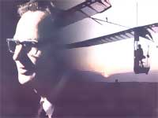
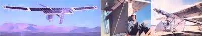
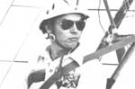

TOWARD A RATIONAL USE OF POWER PHOTO: STERLING STOLL
Anyone who's ever read much Greek mythology is probably familiar with the legend of Daedalus, who flew from captivity in Crete on self-wrought wings with his son Icarus ...only to lose the boy in the sea when the youth soared too close to the sun and melted the wax that held his feathers in place.
Now the fact that this bit of folklore has been with us for thousands of years indicates that humankind has long been taken with the idea of muscle-powered flight ...and, over the centuries, that vision has been pursued by scores of inquisitive and adventurous people.
Today's Daedalus-the man who finally brought the age-old dream to life-goes by the name of Dr. Paul MacCready, Jr ...and is known to most as the designer and builder of the pedal-powered Gossamer Albatross (facing page, top) which carried pilot/motor Bryan Allen across the English Channel, on June 12, 1979, to win the coveted Kremer £100,000 Cross-Channel Competition. Prior to that achievement, MacCready and his team claimed the original Kremer prize-a £50,000 award that had stood untouched for 18 years-by flying a human-powered craft over a one-mile course. And, as if these accomplishments aren't overwhelming in themselves, the California designer was also responsible for the construction of the first airplane to fly solely on sunlight-through the use of photovoltaic cells-and has recently developed a more sophisticated version of that aircraft: the Solar Challenger, piloted by, among others, Janice Brown (above, left and right).
Knowing all this, you may be surprised to learn that Paul MacCready isn't an aerospace engineer on sabbatical from Boeing or McDonnell Douglas ...or that, in fact, he's never had any conventional aircraft design experience except what he picked up while working with model airplanes and gliders. In short, Paul has taken an approach to ultralight aircraft design that disregards nearly everything normally held "sacred" by those in the profession. Furthermore, he and his team have been able to implement their designs with a minimum of materials and equipment, since they had neither the time nor the budget to utilize "big time" methods. (For example, Dr. MacCready employed a crude wing structure mounted on a Ford van to make flutter tests, as shown above center.)
We think you'll discover (as MOTHER staffer Richard Freudenberger did while conducting this interview) that Paul MacCready's way of thinking and doing can be applied to a great many of the challenges that face us. In fact, we may find that it has a place in more and more of what we do, as our planet's resources slowly dwindle.
PLOWBOY: I couldn't help noticing, when I came to see you this morning, that your place of business isn't an airplane hangar as I'd half expected. It's actually a modern, well-equipped office with a sizable staff. I take it, then, that you try to keep your job and your experimental aviation work separate?
MACCREADY: Actually, they're somewhat related. In 1971 I founded AeroVironment, Inc., a diversified firm that currently deals in environmental studies, alternative energy systems, and energy-related products. That company is my bread and butter, so to speak. But some of the work done in our aerosciences division-especially that concerned with advanced aerodynamics-goes hand in hand with many aspects of the Gossamer aircraft projects, since the slow-flying vehicles require special design considerations.
PLOWBOY: As I understand it, you received your bachelor's and master's degrees in physics. At what point did you become involved with the study of aeronautics?
MACCREADY: I didn't have any formal training in that field until I took an aeronautics course at Cal Tech, while working on my master's ...and found it much more appealing than my former area of specialization. To me, physics represents the fundamentals, and I believe that studying it is an excellent scientific training regimen ...but I was interested in sailplanes at that time, too, so it seemed sensible that I expand my area of study to include aeronautics.
PLOWBOY: How did you get involved with sailplanes?
MACCREADY: Oh, I've been interested in flight since I was a boy growing up in New Haven, Connecticut. I started designing my own model gliders at the age of 12, and by the time I was 18-just before Pearl Harbor and the outbreak of the Second World War-I'd competed in national model airplane championships, and had also soloed in a conventional single-engine aircraft. As an undergraduate at Yale, I enrolled in the U.S. Navy flight training program, and at the end of the war I had the opportunity to purchase a surplus training glider, which I taught myself to fly ...with the help of some good friends from my model-building days. In the years following-until about 1958, when I finished my active involvement with sailplanes- I owned several other craft and competed regularly in national and international soaring meets.
My interest in meteorology helped maintain my fascination with gliders, too. I remember in the summer of '45-while living in Pensacola-watching cumulus clouds turn into thunderstorms and thinking it would be fun to play around with a sailplane in such complex currents. Also, I found the gliders to be excellent research-related devices, because they trigger ideas about aerodynamic efficiency, airplane modifications, and ways of working with the weather. They're much more challenging to handle than are powered aircraft.
PLOWBOY: So your gliding took on a scientific cast and encouraged you to pursue an aeronautical degree.
MACCREADY: Exactly. I originally wanted to study meteorology, but Cal Tech didn't have a program in that, so I did my doctoral work in aeronautics. My dissertation dealt with atmospheric turbulence, and by the time I obtained the degree, I was very much involved in weather modification ...which I then took up as a profession in the early 1950's. I had no special interest in the aerospace field and its big company atmosphere, where I suspected one person couldn't make a very relevant contribution. Furthermore, I wasn't enthusiastic about limiting my work to classified military projects.
PLOWBOY: How did your career in meteorology lead you into the development of human-powered aircraft?
MACCREADY: Actually, my entering that field of research was the result of a whole series of events. To begin with, I resigned from Meteorology Research, Inc. in 1970, feeling in need of a change, and after forming a partnership with a relative-I bought out a small catamaran manufacturing firm. Soon thereafter, though, I started AeroVironment ...and-while that corporation prospered-the boat business declined.
To make a long story short, we finally had to sell the "cat" factory, but I was still saddled with a sizable debt resulting from a loan I had countersigned while we were trying to keep the jointly owned company afloat. It was very annoying to have that obligation hanging over my head, and it occurred to me that the simplest way to pay it off would be to take a shot at the £ 50,000 Kremer Prize, which was to be awarded to the first person or group to make a successful controlled flight of a human-powered aircraft ...under conditions set by the British Royal Aeronautical Society. I was sure that I could win the prize, and figured the 90,000 or so dollars it represented would just about take care of my debt.
PLOWBOY: But surely your interest was more than merely financial ...
MACCREADY: Everyone seems to wish I'd tackled human-powered flight in some great romantic spirit for the cause of aviation pioneering, but what I told you happens to be the truth. I had to make a sound business decision: On one hand, most people wouldn't consider building a human-powered aircraft to be a realistic way to try to earn money, but on the other, I believed there was a darned good chance that the project would take just a little work and consume only a few hours on evenings and weekends ...requiring quite a small investment for a very handsome return.
Of course, the whole thing turned out to be much more demanding than I'd hoped, but it also turned out to be much more fun than I'd imagined! My family got involved wholeheartedly, I made new and valuable friends, and I came to enjoy solving the problems we encountered along the way. In fact, I felt so positive about the project that-in the midst of it-I began to wonder whether, if the prize had suddenly been withdrawn, we would have continued anyway. I have a feeling we would have.
Speaking from experience, though, the economic aspects of any experimental endeavor simply can't be ignored. There are many good ideas around, and good people who are willing to work to implement them ...but unless there's an existing economic framework to make funding possible, a research project simply can't survive. Realistically, the technical portions of our initial human-powered flight effort accounted for perhaps only 10% of the job ...the remaining 90% was all a matter of business.
PLOWBOY: What about the people you work with? Does it take a special breed to tackle the challenges posed by experimental aviation work?
MACCREADY: Our circumstances are very unusual, and the number of staffers that we can assimilate each year is next to zero. You see, we have to have very competent workers ...but may need them for only two weeks or two months. Therefore, we can't often use solid citizens who have full-time jobs, spouses, and children ...instead, we employ hang-glider guys who are well qualified, but are sort of living on the fringes of society. They're mostly unmarried and are available at short notice. Of course, we do have a few establishment types who take on some responsibilities-but can't devote a whole lot of time to the projects-plus a couple of retired people who spend a good deal of time on the job.
PLOWBOY: The development of the Gossamer Condor was the first task that your loosely knit team tackled, wasn't it?
MACCREADY: Yes, the Condor was our initial success ...it was a pedal-driven machine, and Bryan Allen piloted it around a mile-long figure-eight course at Shafter Airport here in California, to win the Kremer £50,000 Competition, in August of 1977. Then, in October 1978, the Royal Aeronautical Society officially announced the establishment of a new contest the Kremer of £100,000 Cross-Channel Competition-to provide incentive for a human-powered flight between England and France. We decided to go after that award, too, and built the Gossamer Albatross, with sponsorship from Du Pont. Bryan completed the cross-channel flight in June of 1979.
In order to have backup aircraft for the event, we constructed two additional units: the Gossamer Albatross II, which was later selected for use in NASA's low-speed flight research program, and the Gossamer Penguin-essentially a 3/4-scale version of the Albatross-which we converted to electric drive early in 1980 and powered solely with photovoltaic cells later in the year. My youngest son, Marshall, performed the initial sun-power tests, and then we made a two-mile record flight -with Janice Brown as pilot-on August 7, 1980. Our newest craft is the Solar Challenger ...a lightweight, comparatively rugged airplane which is capable of flying safely at high altitudes and derives all its power from solar cells mounted on the upper surface of its wings and horizontal rear stabilizer.
PLOWBOY: You mentioned your Du Pont sponsorship ...don't you find it ironic that you had to rely on big business to achieve what's widely regarded as a "little guy's" triumph?
MACCREADY: No, that's not how I see it at all, and for two reasons. First, we built the Albatross before we ever got involved with Du Pont ...but we were using a lot of that company's materials. That's why we went to the people there for sponsorship in the first place. They, in turn, saw our project as a good showcase for some of their products. It demonstrated that the modern Du Pont materials were very light and strong ...attributes which will make them valuable in undertakings that might have more practical applications than do human or solar-powered airplanes. But our craft are just different enough to be interesting and exciting, and the materials used in them are much more likely to get publicity than would the same substances transformed into, say, tops for garbage cans!
In the second place, the corporate sponsorship put our projects on the map, so to speak. The Du Pont people worked up press kits, made announcements, scheduled conferences, and generally assured us well-observed events. And, of course, that publicity has attracted attention to a number of worthwhile projects. In the case of the solar-powered airplanes in particular, we've been able to demonstrate dramatically that photovoltaic cells do work ...and it's my hope that our efforts may help promote the ongoing attempts to reduce their cost over the next few years.
PLOWBOY: So you really don't see any direct practical use for the aircraft you've developed ...not even as short-hop commuting planes to be used in uncongested areas?
MACCREADY: Let's put it this way: Flying a human-powered airplane was like climbing Mount Everest ...it represented a challenge that's captivated humankind for centuries. But it wouldn't make sense to build a hotel up on top of the world's tallest peak and call it a business, and it's the same with the plane. We may actually have put roadblocks in the way of the development of a commercial human-powered airplane, because we've taken all the significant prizes, and-while doing so-have demonstrated that the vehicle capable of accomplishing the feat is so delicate that it really can't be marketed.
The same goes for the Challenger. It's a symbol. The solar-powered craft is a dreadful airplane. We had to make so many compromises to permit it to fly on photovoltaic cells that it's really just an ugly duckling. Of course, it's more rugged than the Albatross, and it can fly through the turbulence that's encountered at higher altitudes. But, in order to enable it to operate on solar power, we had to use a very wide wing and a huge stabilizer-to allow adequate surface for the cells-and a gigantic propeller. All of that made for a very peculiar structure that flies slowly and isn't easy to control ...hence the need for a skilled and lightweight pilot like Janice Brown. No, I doubt that even one ten-thousandth of a percent of the solar cells being used ten years from now will be powering airplanes.
PLOWBOY: Then you do believe that photovoltaic panels can be put to more practical use in other areas?
MACCREADY: Oh, most definitely. The biggest obstacle to their widespread acceptance is cost. At $10 a watt, or whatever the price is now, they're not really affordable ...but the goal set for the Department of Energy's so-called Solar Ray project was 772 a watt by 1986, figured in 1980 dollars. From what I understand, progress is being made ...the breakthroughs are there, the cost of raw materials and production is decreasing, and-on the whole-the field is in pretty good shape. Now that doesn't mean all the obstacles have been overcome ...it just indicates that the industry is working toward achieving what it has set out to do. In fact, some of the corporations that were involved with the program from the beginning are now putting a lot of their own money into it and not sharing their data. I take that to mean they're really onto something. It's a very good sign.
PLOWBOY: You mentioned the figure of 772 a watt. If I'm not mistaken, that's less expensive than most present utility rates. Do you think the photovoltaic cell may provide the answer to our energy problems?
MACCREADY: No, we shouldn't make the mistake of viewing solar electricity as a panacea. However, we do know that the cost of petroleum-based energy can only go up as supplies dwindle ...and photovoltaic power is the one alternative I know of that is assuredly going to be inexpensive, by comparison, within the next five or six years.
PLOWBOY: Do you think the day will come when many people will-as some do today-have rooftop photovoltaic arrays that'll allow them to produce their own electricity on an individual basis?
MACCREADY: I'm not convinced of the practicality of the notion that each person should become his or her own little utility company.
PLOWBOY: Are you, then, in favor of community-scale solar power plants?
MACCREADY: Yes, I am. Utility systems were formed, in the first place, to enable power to be generated centrally and efficiently and transmitted to the public through a standardized grid. If I set out to avoid the use of fossil fuels, I'd prefer to have a solar power plant located in a desert region, where there's plenty of sun, rather than to rely on my own often cloudy area's intermittent sunlight to supply my household.
PLOWBOY: So you'd agree that there's a happy medium somewhere between a huge power monopoly and a perhaps inefficient, small-scale, individual energy-generating plant. But don't you recognize the fear that a utility of even modest size might tend to get, well ...overbearing, especially if it's the only source of available energy in an area?
MACCREADY: There's always the danger that its customers will become overly dependent upon the utility, but that would be their own fault. If we all actively practiced energy conservation and didn't live lifestyles that are literally sustained by the power companies, we couldn't be manipulated by the fear of having to get along with limited or no-electrical service for short periods.
PLOWBOY: You sound like an advocate of self-discipline.
MACCREADY: Yes, if that's what you want to call it. I'm sure you realize that this whole energy crisis we're going through involves much more than just the cost of oil. Part of the problem is that our society has come to expect instant gratification. It's no wonder that the average citizen expects a quick fix to the high price of gasoline, without giving a thought to why the fuel is becoming more expensive in the first place.
I'm convinced that the real price of gasoline-including the cost of locating and unearthing it, processing it, and transporting it ...the expense of maintaining a military presence to insure our continued access to foreign supplies ...and that of making investments in developing replacements for the future-is probably closer to $10 a gallon than to the $1.40 or so we're paying for it now.
Furthermore, our energy dependence is costing us in other ways ...you might almost say we're spending our nation's future. And America's world position is now dominated by what goes on in the Middle East, with our foreign policy pretty much made up of what we have to do to respond to real or imagined threats. We've come to the point where an oil-rich sheik has more power than any U.S. senator-and perhaps even more than the President-to affect our national attitude toward one country or another with regard to the sale of weapons, the sharing of technology, and so forth. We'll never be masters of our own destiny as long as we're hooked on this fuel we burn. If we were producing all the energy we need, our foreign policy could be based on logic rather than fear. We could work with these other nations, and perhaps do good things with them, in a sensible manner.
PLOWBOY: I'm sure there aren't any simple answers, but in which course of action do you think the solutions lie?
MACCREADY: We have to start by readjusting our way of thinking, and that will require some bold initiative on the part of those who have influence. I have a strong feeling that corporations, individuals, and organizations like your magazine, for example, can be much more effective if they're not dependent upon government ...since politics has a way of tying the hands of those it "helps". Even Carter-who, I think, made a sincere effort to put a healthy tax on gasoline so we wouldn't squander it couldn't accomplish his goal because of the pressure he was under.
PLOWBOY: Then you feel that raising the price of fuel would be an acceptable way for us-in effect-to force ourselves to develop alternatives while saving our resources?
MACCREADY: Yes, I do, although it wouldn't be easy to arrive at a cost that would encourage conservation without causing too much suffering. But could you imagine the fantastic cut in petroleum use we'd see if everyone were paying $10 a gallon? And, regardless of how it comes about, both short- and longterm energy conservation should be among our top national priorities, right along with the development of reliable petroleum substitutes. Unfortunately, right now conservation isn't as good a business as is consumption.
Colorado aviator Stephen Ptacek got MacCready's go-ahead t pilot the solar challenger for the France-to-England flight.
However, we must get accustomed to the fact that energy doesn't come-and never should have come-cheap. Do you realize that gasoline is still so inexpensive in this country that a new car operated over three years costs-including depreciation, interest payments, insurance, maintenance, fuel, and so forth-about 38 to 50 cents a mile ...and that only 12% of that is spent on gasoline? We're paying a much lower fuel cost per mile of driving than people in Europe paid 25 or 50 years ago! Energy is very inexpensive in the U.S., and as a result we're devouring the earth's fossil fuel resources-which we can financially afford to do-in great amounts, and making petroleum products terribly expensive for the rest of the world.
PLOWBOY: And for future generations.
MACCREADY: Oh, your grandchildren will likely find it incredi ble-or even sinful-that you burned up a gallon of gasoline to fetch a pack of cigarettes! Nonetheless, we still go on believing that, miraculously, things will get better. In fact, there's a chance that-with the glut of fuel on the market right now gasoline prices might be cut slightly ...which will probably prompt many people to go out and buy bigger cars, because that's what Madison Avenue has told them is macho. And that sort of reaction eventually results in a needless waste of petroleum and still higher prices at the pumps.
PLOWBOY: Do you think the higher prices reflect the oil industry's desire to make an unreasonable profit?
MACCREADY: I've had several people question me on that, as well as on the possibility that Big Oil is buying out the manufacturers of solar cells in order to stifle any competition. However, I think that the petroleum industry is doing just what you or I would do if we owned a business dealing in a dwindling and unreplenishable resource and had money to invest: We'd be looking for alternatives. Such firms have bought out virtually all the major solar cell companies and are pouring tens of millions of dollars into them. They certainly wouldn't be spending that kind of money on a technology that they were trying to suppress.
I'm afraid that a good deal of this mistrust of industry is the result of yellow journalism on the part of some popular-and irresponsible tabloid publications. Such newspapers know that a lot of their articles are out-and-out frauds, but they also know what the public will buy. Unfortunately, each unfounded article erodes a little more of the mind of whoever digests it ...and those same readers must help decide whom to elect, whether nuclear power should be used, and other very subtle and difficult questions. It's too bad we can't figure out some way to bring a class action suit against the publishers of sensationalist newsstand rags for literally damaging the thinking ability of millions of people!
PLOWBOY: All right, you've told us how you view our energy problems and proposed some ways in which we might be able to deal with them. But how do you expect an average American to cope with $10-a-gallon gasoline when he or she might not now be able to afford a balanced meal every night of the week? Surely you've got to consider the fact that our society must continue to function-without, if possible, causing widespread suffering-in the midst of any changes that must be made.
MACCREADY: Exactly ...and that's why it's important that we take our search for alternatives seriously, so we won't be caught short if an emergency situation should arise. Whether the solution lies in developing a practical fuel or in building a new generation of automobiles, we should be working toward it now, not after the fact.
PLOWBOY: Do you think that the auto industry is making a concerted effort toward developing practical high-mileage vehicles?
MACCREADY: Oh, without a doubt. I'm very optimistic about the next ten years in the automotive industry. Its engineers and designers are really focusing on doing some very good things, such as using new lightweight materials. Of course, the changes don't happen overnight. If a firm wanted, for example, to make a hood from one of the newer composite materials, it would take many millions of dollars of research and development money to decide what to do, how to do it, how well the material would endure, and whether the change would really be more economical over the long term than the sheet-metal method it's replacing. And then there's always the chance that the public won't accept a new idea, regardless of how efficient or inexpensive it is, because it's not what people are used to ...in which case the company could go under for lack of sales. That particular sword-of-Damocles threat is a sure impediment to creativity and innovation.
PLOWBOY: I imagine, though, that it'd be pretty difficult to come up with an alternative method of bringing about change ...after all, Detroit's been going at it in the plodding fashion you describe-for the most part successfully-for 80 years!
MACCREADY: Yes, but I don't think the world is going to let us make the kind of slow, well-researched decisions we've made in the past. We can no longer afford to spend years between the conception of a new development and its appearance. We might better put our resources and efforts toward vehicles that are more versatile, more modular, and maybe even more expensive at first ...but that wouldn't take all that long to adapt to suit changing circumstances.
PLOWBOY: And how might that sort of breakthrough come about?
MACCREADY: Again, we'd have to start by reorienting our method of thinking. The May issue of Scientific American contains an excellent article on cars of the future and what sorts of changes will be required to bring the Corporate Average Fuel Economy up to the 80-mile-per-gallon figure. But even that piece assumes that we'll work with an established element and try to coax, push, and develop it into something better. However, there's an opposing school of thought that's downright foreign to the evolutionary way of designing things, and its premise-in this case-can be based on one question: What is the minimum that's really required to move someone from here to there? By focusing on a clearly defined goal, a designer tends to get less tied up with peripheral matters or extrapolation from a known element, all of which can obscure the most direct path toward the objective.
I'll relate a little anecdote that illustrates this point very well. I was talking with my ten-year-old son about the idea of putting a needle on water and having it float, supported by the liquid's surface tension. Now a very tiny needle is easy to float, but I asked him how to put the biggest possible needle down and still have it float. I was really hoping he'd come up with a way in which it could be lowered without disturbing the integrity of the liquid's uppermost layer.
My son's answer was refreshing: Freeze the water, place the needle on it, then let the ice melt. Now whether it would work or not isn't the issue here. The point is that I would never have thought of that, because in my youth I'd been conditioned to focus on the idea of physically setting the needle down when performing the experiment. This youngster, though, had never seen the trick done, so he was starting with a clean slate.
PLOWBOY: And you believe that sort of unprejudiced thinking could be applied-to good effect-by automotive designers?
MACCREADY: I don't see why not, though admittedly it'd be difficult to change such a well-established industry in a short period of time. And there'd be a lot of public relations work required to overcome negative consumer reaction to a vehicle that would necessarily be radically different from what we're used to.
PLOWBOY: What other alternatives do you see ...is it possible that the car of the future won't be developed by one of the Detroit juggernauts, but by a whole new enterprise?
MACCREADY: That's an interesting question. I'm personally involved in this area, you see, because I happen to be co-president of the International Human-Powered Vehicle Association (IHPVA), an organization that sponsors annual races here in Los Angeles. Nearly everyone who's worked on our aircraft has also spent some time on the research and development of these pedaled devices, and I find the field extremely exciting and very promising. It's difficult to say where it might lead, though the transportation industry is definitely taking a good look at what we're doing.
PLOWBOY: Do the bikes have that much in common with cars?
MACCREADY: I'm not talking about typical bicycles. Human powered vehicles are built in many different configurations. Some have four wheels, some three or two. Many are bicycle frames with fairings, but the more radical ones use custom built alloy frames with fiberglass or mylar coverings, or composite bodies that have integral strength characteristics. They can carry one or several riders in a variety of positions, depending upon the design of the machine, and their low weight and highly aerodynamic shape means that they'll move down the road at 30 miles per hour with a human input of only about 1/4 horsepower. Some of the fastest ones can easily break the legal speed limit.
Now the HPV's that win the races are, of course, not ideal street vehicles because they're too fast and offer a minimum of protection and visibility ...but I'm sure it's possible to design a good vehicle, halfway between a bike and a small car, that would be suitable for commuting at speeds of 35 miles per hour or less. It would be very inexpensive ...and much safer than a bicycle or a moped because it would enclose the driver in a protective pocket with a roll bar and side guards.
PLOWBOY: Do you have any plans for developing a road vehicle program that might parallel your aircraft efforts?
MACCREADY: Well, right now I'm spending some time studying HPV's, talking to a lot of people, and drawing up possible configurations. As I said, my personal interest-besides seeing the sport grow-is in the development of practical, street-usable vehicles. I see the IHPVA competition as much more than just a bunch of people out for the challenge of racing. The world can't afford, any longer, to use so much of its mineral resources and fossil fuels to provide transportation. We've got to find a way to do the same job with a lot less material and energy ...and the human-powered vehicles help show what can be done, just as our airplane experiments have demonstrated the potential of focusing on the efficient use of power.
I'd like to see a mass-produced vehicle developed that retails at around $500-which is about the same price as a good racing bike-and permits people to handle all their ordinary commuting and shopping tasks except those requiring freeway driving. Are you aware that nearly 75% of all car trips involve distances of less than ten miles? Imagine the fuel we'd save if such vehicles could handle all of that travel!
PLOWBOY: But wouldn't HPV's be limited by terrain?
MACCREADY: Not necessarily. You see, these vehicles could easily use a small auxiliary gasoline or electric motor without making much of an impact on our energy supplies. Not only would the machine be capable of perhaps 500 miles per gallon, but it might use only 50 or 75 pounds of material, since that's really the minimum required to move a person, safely and comfortably, down a hard-surfaced road in low to moderate winds at the speeds we're talking about. And mass production is a key factor, too, because it saves money and cuts waste to a minimum. Cars are sold now at a little over $2.00 a pound ...up from the $1.00 a pound they used to be. So if the HPV weighs 50 pounds and sells for $500, it should certainly be profitable to mass-produce ...using the kind of space-age technology that Detroit currently applies to the assembly of automobiles.
PLOWBOY: How practical do you think the vehicles would really be on today's roads?
MACCREADY: Oh, there's a lot of negativism to overcome in doing something like this. The transportation system we grew up with has developed over the last 80 or 100 years. It involves certain kinds of roads, certain distances between home and work, certain parameters for car design, and even special procedures for obtaining drivers' licenses ...so when you try to inject something foreign into the system, it doesn't fit very well. However, if the HPV's were first introduced into an area where they likely would be accepted-perhaps a community such as Davis, California, where bicycles are already used on a large scale for transportation-they'd be assimilated more easily. It's just a matter of gaining public acceptance.
PLOWBOY: All right, at this point you're involved in the humanpowered vehicle movement, but you haven't begun any serious prototype construction efforts. What projects are you currently undertaking? Your alternative aviation triumphs are going to be tough acts to follow.
MACCREADY: Well, we're planning a Paris-to-London flight with the Solar Challenger, which I'm sure you're aware of. By the time this interview goes to press, it will have-we hope -already occurred. We're using a new, more powerful motor system-and flying in the summer-so the results should be better than those logged during previous flights. The total distance is between 160 and 220 miles-depending on our route-and 22 of those will be over water, so we plan to maintain an altitude of about 14,000 feet in order to allow a 33-mile glide path should mechanical difficulties arise. It's all a great logistics headache, frankly, and we want to do it in as simple a manner as we can ...because, even though it's a huge project, it doesn't have a large budget.
PLOWBOY: One final question: Have you ever considered why you've been so successful in both human- and solar-powered flight when others haven't? Can you chalk it up to talent, determination, hard work, luck ...or any combination of those?
MACCREADY: First and foremost, I had a clear goal ...I knew what my motives were, and I didn't merely extrapolate from a previous position in an attempt to arrive at an answer. Looking back, I can see what a benefit it was to me that I never had any conventional aircraft structural design experience. Every other serious team did, and they all made craft that looked pretty much like standard airplanes except that they were lighter and less complex. I'm beginning to find a lot more that's admirable in the airplane projects than I thought at first, simply because they reinforced my thought process ...they taught me to name a goal from the outset, and then to ignore any and all notions that weren't directly concerned with the job at hand.
EDITOR'S NOTE: On July 7, 1981 Dr. MacCready's Solar Challenger piloted by Stephen Ptacek-did indeed accomplish the hoped-for English Channel crossing ...covering the 230 miles (actual flight distance) from Cormeilles-en-Vexin, France to Manston, England in 5 hours and 23 minutes and achieving a maximum speed of 47 MPH. "If solar cells can carry a man from France to England," MacCready commented, "it proves they have muscle and are useful for more than just wristwatches."
A detailed account of Paul MacCready's human-powered flight exploits has recently been published by the Houghton Mifflin Company: Gossamer Odyssey by Morton Grosser (a member of the Albatross team) retails for $14.95 and should be available at your local bookstore.
And if you're interested in learning more about human-pow ered land vehicles, turn to 071-187-01 of this issue for details of the most recent HPVA event.
|
 |
 |
 |